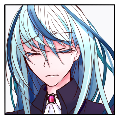
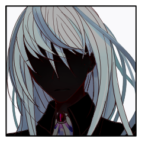

裁判
GM
マップの用意ができていないので今日は行動順を決めて終わります。
GM
ブラッドスクーパーの配下は仕込です。
裁判開始時に2つのアイテムを手に入れます。
[ ブラッドスクーパー ] 日刻みの時計 : 1 → 0
ルルキス
1d6+0 (1D6+0)
＞ 4[4]+0 ＞ 4
フィルズ
1D6+1 (1D6+1)
＞ 2[2]+1 ＞ 3
透子
1d6+3+2 (1D6+3+2) ＞
5[5]+3+2 ＞ 10
ブラッドスクーパー
1d6+3+2 (1D6+3+2) ＞
6[6]+3+2 ＞ 11
透子
懐から取り出した時計が示す数字は24。
ちょうど今日までの旅の日々。
裁判 ラウンド1
ブラッドスクーパー
＊h6 s6 c5 s8 dJ cA
ブラッドスクーパー
亡者はそのガラス板の瞳に空とあなたがたを映している。
もう瞬くことも、輝くこともない。
透子
いつもと同じように。救世主を相手取るときも、亡者を相手取るときも同じ。
３人……ではなく、２人の後ろに腰かける。
フィルズ
静かなる裁判の開始。ただ風だけが鳴り響く。
誰も動かない。フィルズも、また。
フィルズ
まだ動くべきではない。ただじっとラタスが成り果てた亡者を見据えている。
裁判 ラウンド2
ブラッドスクーパー
＊c3 c10 （c5 s8 dJ cA）
ブラッドスクーパー
＊s8 かんしゃく
c3 女王命令 ルルキス 透子
GM
まずはルルキスちゃんから処理します。
割り込みはありますか？
ブラッドスクーパー
2d6+4>=7 (2D6+4>=7) ＞
7[3,4]+4 ＞ 11 ＞ 成功
ブラッドスクーパー
1d6+6 (1D6+6)
＞ 5[5]+6 ＞ 11
フィルズ
2d+3>=7 (2D6+3>=7) ＞
7[6,1]+3 ＞ 10 ＞ 成功
[ フィルズ ] HP : 21 → 13
[ フィルズ ] HP : 13 → 14
フィルズ
2d+3>=7 (2D6+3>=7) ＞
10[5,5]+3 ＞ 13 ＞ 成功
ルルキス
2d6+3+2=>7 判定：猟奇+援護 (2D6+3+2>=7) ＞
3[1,2]+3+2 ＞ 8 ＞ 成功
ブラッドスクーパー
2d6+1d6+4-6>=7 (2D6+1D6+4-6>=7)
＞ 6[3,3]+1[1]+4-6 ＞ 5 ＞ 失敗
[ ブラッドスクーパー ] HP : 54 → 49
[ ブラッドスクーパー ] HP : 49 → 50
透子
2d6+3+1+3 (2D6+3+1+3) ＞
6[1,5]+3+1+3 ＞ 13
ブラッドスクーパー
2d6+4>=13 (2D6+4>=13) ＞
11[6,5]+4 ＞ 15 ＞ 成功
ブラッドスクーパー
2d6+4>=13 (2D6+4>=13) ＞
8[2,6]+4 ＞ 12 ＞ 失敗
ブラッドスクーパー
女王の命令に従って手を汚した日々。
それを象徴する10指のナイフが閃く。
ブラッドスクーパー
黒煙に紛れない殺意が、かつて仲間だった者へ向かう。
ブラッドスクーパー
旅立ちのあの悶着の時ように、まずは“お前から”
ルルキス
攻撃の予兆を感じつつも、回避行動を取らずにそのまま真っ直ぐ。
ルルキス
回避の必要はない。余計な動きは隊列を乱す。それを捌くのは、自分の役割ではない。
フィルズ
「………そんな動きが…通じるとでも思っているのか！！！」
フィルズ
防ぐのはフィルズだ。今まで、そうしてきた。
フィルズ
紛れず、策もなく。ただ亡者としての膂力に任せただけの一撃。…フィルズが共に戦ってきたラタスは”そのようなものではなかった”。
フィルズ
故に防げる。一瞬の間にて両者の間に割って入ると、斥力を纏い振るった細剣で打ち払う。
フィルズ
そうして、剣を突きつける。
お前は、そんなものではなかったという意思を籠めて。
ブラッドスクーパー
亡者は、生前の動きを繰り返すだけ。
これもただのルーティンワーク。
ブラッドスクーパー
弾かれ、飛び退り他の獲物へ跳ぶ。
ブラッドスクーパー
狙える者から狙う。
いかにもな常套手段。
ルルキス
意識が自分から逸れた瞬間を見計らい、亡者めがけて距離を詰める。
ルルキス
普段は呪文を唱え、儀式を行うために使われたそれを。
ルルキス
ばきんと杖が折れる音。知性への未練を振り切る音。
ルルキス
折れた杖を捨て、拳を握り、“ブラッドスクーパー”へと向き直る。
ブラッドスクーパー
地を駆ける亡者の動きが止まり、振り向いた。
透子
次の動きを予測するように、そしてその結末を告げるように亡者に言い放つ。
透子
＊こしょうを使用します。対象ブラッドスクーパー
透子
＊主動作 奪取で対象ブラッドスクーパー hK
ブラッドスクーパー
風に乗ってこしょうが飛ぶ。
かつて人々がたくさん命をかけたスパイス。
ブラッドスクーパー
くしゃみをひとつ、ふたつ。
ガスマスクが咽る。
透子
2d6+3+1>=7 (2D6+3+1>=7) ＞
4[1,3]+3+1 ＞ 8 ＞ 成功
透子
「そんなことじゃあ今に何もできなくなると思うけど……」
透子
亡者からすれば、ただ遠くで座っているだけの女。
透子
それでもその言葉は目に見えない何かを奪っていくような支配力がある。
[ ブラッドスクーパー ] HP : 50 → 48
ブラッドスクーパー
2d6+4>=7 (2D6+4>=7) ＞
3[2,1]+4 ＞ 7 ＞ 成功
ルルキス
2d6+3=>7 判定：猟奇 (2D6+3>=7) ＞
11[6,5]+3 ＞ 14 ＞ 成功
ルルキス
1d6+2+2 (1D6+2+2) ＞
4[4]+2+2 ＞ 8
[ ブラッドスクーパー ] HP : 48 → 38
ブラッドスクーパー
夢のような迷い言。
分の悪い賭け。
ルルキス
恩に着ると言ってくれた。その胸中を、今や知るすべはない。
ルルキス
とても大切で、とても大変な頼みごと。けれど、できると信じて、託してくれた。
ルルキス
分の悪い賭けと言っていた。こうなる結果を、予想しない彼ではなかった。
ルルキス
それでも、最後のわがままを話してくれた。最初に、私に。
ルルキス
「（最初にあなたを殺す役割は、私に託してくれた。最後にあなたを殺す役割も、私がいい）」
ルルキス
生前の記憶、行動の面影を見せる亡者を、少しでもかき乱すために、普段と違う戦い方が必要だった。
ルルキス
喧嘩はわからない。けれど大振りでいいのだ。
ルルキス
今の自分には、暴風を引き起こすほどの力が与えられているのだから。
ルルキス
拳にまとわりついた風で、亡者を横から叩きつける。
ブラッドスクーパー
したたかに体躯を岩肌に打ち付ける。
十字架が揺れた。
フィルズ
2d+3+2>=7 (2D6+3+2>=7) ＞
10[6,4]+3+2 ＞ 15 ＞ 成功
フィルズ
＊回復対象はフィルズ HPを6回復（2＋装備2＋技能強化2）
[ フィルズ ] HP : 14 → 20
GM
3+2+2-1（愛＋援護＋衰弱－ボタン）
6点ダメージ
[ ブラッドスクーパー ] HP : 38 → 32
フィルズ
ルルキスによる一撃。それを受けた亡者が一息をつく間もなく一足で駆ける。
フィルズ
その手に握られる細剣には魔力の光を帯びていて、それが亡者の躰にも浮かぶ。先程弾いたその時、既に刻印は為されていた。
ブラッドスクーパー
亡者の持ざる魔力が、その毛皮を肉を穿つ。
フィルズ
細剣は引力に導かれるままに亡者へと振るわれて、斥力は抉った肉を外側へと引き裂いていく。
ブラッドスクーパー
かつて、ラタスは皮膚ごと刻印を切り落として凌いだ。
フィルズ
浮かぶ飛沫。それも一瞬のことで。溶けるように消えたそれはフィルズへと吸い込まれていく。
フィルズ
引力、引き寄せる力。それは何も物理的なものだけではない。心の疵で出来た飛沫は魔力として引き寄せられ、フィルズの身体をそのままに癒やす。
[ 透子 ] こしょう : 2 → 1
[ 透子 ] 日刻みの時計 : 1 → 0
裁判 ラウンド3
ブラッドスクーパー
＊d6 d7 h7 dK（c10 dJ）
透子
フィルズとルルキスと、そして亡者を見ている。
視ている。
透子
この後この先すべての結末を視ながら、決して口にはしない。
ルルキス
2d6+3+2=>7 判定：猟奇 (2D6+3+2>=7) ＞
6[1,5]+3+2 ＞ 11 ＞ 成功
ルルキス
C(3+2+2+2) 援護+看破+衰弱 c(3+2+2+2) ＞
9
[ ブラッドスクーパー ] HP : 32 → 24
ブラッドスクーパー
2d6+4-5=>7 (2D6+4-5>=7) ＞
10[5,5]+4-5 ＞ 9 ＞ 成功
ブラッドスクーパー
1d6+6 (1D6+6)
＞ 1[1]+6 ＞ 7
フィルズ
2d+3>=7 (2D6+3>=7) ＞
4[1,3]+3 ＞ 7 ＞ 成功
GM
ダメージ軽減ですね。
2点ダメージが減ります。
ルルキス
再び拳を構えて突っ込む。そこに合わせられるブラッドスクーパーの反撃。
フィルズ
＊7-愛3-装備-1-軽減2でHPを1減らします
[ フィルズ ] HP : 20 → 19
ブラッドスクーパー
拳を引きずり込むように、身をよじる。
血のような尾が鞭のようにしなった。
フィルズ
＊h5で王子を発動します。対象はルルキス
フィルズ
2d+3>=7 (2D6+3>=7) ＞
5[4,1]+3 ＞ 8 ＞ 成功
ブラッドスクーパー
翼の代わりにしなる影のような尾が、迎撃手の身体を捕らえるべく風を切る音。
フィルズ
その攻撃は通らない。フィルズがルルキスに与えた力。魔力を宿す宝石が斥力を放ち迫りくる尾を弾く。
フィルズ
そして、宝石に籠められた力はそれだけではない。弾く力、それは同様に彼女が振るう力を亡者へと引き寄せ捉える力にも転じる。
[ ブラッドスクーパー ] HP : 24 → 21
透子
2d6+3+1+1 (2D6+3+1+1) ＞
7[2,5]+3+1+1 ＞ 12
ブラッドスクーパー
2d6+4>=12 (2D6+4>=12) ＞
5[2,3]+4 ＞ 9 ＞ 失敗
ルルキス
2d6+3=>7 判定：猟奇 (2D6+3>=7) ＞
7[5,2]+3 ＞ 10 ＞ 成功
ルルキス
1d6+2+2+2 衰弱看破 (1D6+2+2+2) ＞
5[5]+2+2+2 ＞ 11
[ ブラッドスクーパー ] HP : 21 → 7
ルルキス
斥力によってふらついた体に、拳がめりこむ。
ブラッドスクーパー
硬い毛皮で弾ききれないほどの力が、亡者の肉をぐずぐずに壊す。
透子
亡者の動きはルルキスのことを止められない。
ルルキスの拳は亡者を的確に抉りぬく。
透子
わざわざ指示する必要も、ましてや力を振るうこともない。
戦闘へ頭脳をフル回転させているルルキスをただ見守るだけでいい。
ブラッドスクーパー
── どんな神様なんだか知らないが
ブラッドスクーパー
“女王”に仕えるより楽しい人生になるかもな ──
ブラッドスクーパー
真剣に祈ったことのない男が願ったように。
ブラッドスクーパー
亡者はあなたがたの護りに攻め込めない。
フィルズ
しかし、決して油断はしない。彼を終わらせるのがルルキスの役目だとしたら、皆を守り抜くことこそが自らの役目なのだから。
フィルズ
フィルズは優勢にある中でも慎重に動き、”万が一”の攻撃をも通さぬように立ち回る。
裁判 ラウンド4
ブラッドスクーパー
＊d2 cJ sA hA（d7 dJ）
[ ブラッドスクーパー ] 衰弱 : 2 → 0
ブラッドスクーパー
＊女王命令 d2
ルルキス 透子
透子
2d6+3+1 (2D6+3+1) ＞
2[1,1]+3+1 ＞ 6
透子
2d6+3+1 (2D6+3+1) ＞
3[2,1]+3+1 ＞ 7
ブラッドスクーパー
2d6+4=>7 (2D6+4>=7) ＞
7[1,6]+4 ＞ 11 ＞ 成功
ブラッドスクーパー
1d6+6 (1D6+6)
＞ 2[2]+6 ＞ 8
透子
2d6+3+1 (2D6+3+1) ＞
7[5,2]+3+1 ＞ 11
ブラッドスクーパー
2d6+4+3=>11 (2D6+4+3>=11) ＞
7[2,5]+4+3 ＞ 14 ＞ 成功
ブラッドスクーパー
1d6+6+2 (1D6+6+2) ＞
3[3]+6+2 ＞ 11
フィルズ
2d+3>=7 (2D6+3>=7) ＞
9[6,3]+3 ＞ 12 ＞ 成功
[ フィルズ ] HP : 19 → 17
[ フィルズ ] HP : 17 → 10
[ ルルキス ] HP : 20 → 13
フィルズ
2d+3>=7 (2D6+3>=7) ＞
11[6,5]+3 ＞ 14 ＞ 成功
フィルズ
＊対象は透子 続けてs7 王子を発動します
フィルズ
2d+3>=7 (2D6+3>=7) ＞
4[1,3]+3 ＞ 7 ＞ 成功
ブラッドスクーパー
万が一。
その一指がルルキスの肩を裂く。
ルルキス
肩に走る痛み。だらりと左手の力が抜ける。
ブラッドスクーパー
交錯する猟奇の血が視界にけぶる。
ブラッドスクーパー
男が一度吐いた弱音や甘えが、こんな形になってあなたの肉を切る。
ブラッドスクーパー
今こうして亡者の形になって約束を果たされるのを待つ。
ルルキス
すぐには引かず、足を止めて一瞬、反撃の機会を伺う。追撃が来ないのを見て一歩引く。
フィルズ
”万が一”に後悔はしない。ただ引力を用いてルルキスの出血のみを防ぐ。
フィルズ
治療とも言えぬ行い。痛みはそのままそこにある。ただ戦い続けられるだけの処置を済ませる。
ルルキス
万が一が来ないとは、最初から思っていない。
ルルキス
フィルズのことを仲間として信用するのと、万能の神として信奉するのとは違う。
ルルキス
信念は揺らがず、自分の立ち位置は揺らがず。守りを彼に託すことに変わりはない。
透子
亡者の動きにわずかに顔をしかめる。風の強い山頂だというのに体にじっとりと汗をかく。
ブラッドスクーパー
神の言う通りならこの爪は届くのか？
ブラッドスクーパー
最後まであなたを抱かなかった手。
フィルズ
それを立ち塞ぐように間へと至る影がある。これ以上仲間を傷つけさせぬという誓い。それを何度でも胸へと灯し。
フィルズ
細剣を振るう。斥力を纏い振るわれた剣は亡者を突き離す。
ブラッドスクーパー
突き放されてなお亡者の強靭な肉体が躍り出る。
手を広げ、抱え込むようにして護る者の背を裂く。
ブラッドスクーパー
十字が揺れる。
初めて飲み明かして酔って、肩を組んだあの日。
透子
短く一息。目の前で起こる攻防にも動じず、ただ亡者を視る。
透子
心の声は聞こえない。
亡者は何も話さない。
すべてがが視えるわけではない。
未来がわかるわけがない。
透子
つまるところ透子の力とは未来予知ではない。
断片的に視えるものを、聞こえる音を総動員して未来を予測する。
小さな情報を寄せ集め、千里を見通すかのように。
透子
でもそれを完璧にこなせる。
だから私は本物で、まがいものとも神とも違う。
すべて私のいうとおりり。
透子
ルルキスとフィルズの血がはねようが、持てる力すべてをもってすべてを視通す。

フィルズ
背の傷など構わない。たとえ成り果てたとしてラタス、お前が遺すものならば。
フィルズ
だが、やはりお前は”ラタス”ではない。お前に勝利までをくれてやるわけにはいかない。
フィルズ
フィルズを引き裂いた亡者の両の手には刻印が刻まれている。穿ち、抉り、肉を抉る魔力の印。
フィルズ
そう言い捨てるとフィルズは再び皆を護る構えを取る。
透子
接近してきた亡者に対し、風に乗って何かが流れる。
透子
2d6+3+1 (2D6+3+1) ＞
6[4,2]+3+1 ＞ 10
ブラッドスクーパー
2d6+4>=10 (2D6+4>=10) ＞
6[3,3]+4 ＞ 10 ＞ 成功
透子
2d6+3+1>=10 (2D6+3+1>=10) ＞
8[6,2]+3+1 ＞ 12 ＞ 成功
透子
Choice[《封印》,《猛毒》,《指切り》,《衰弱》] (choice[《封印》,《猛毒》,《指切り》,《衰弱》])
＞ 《猛毒》
[ ブラッドスクーパー ] HP : 7 → 0
ブラッドスクーパー
2d6+1+2 (2D6+1+2) ＞
5[1,4]+1+2 ＞ 8
GM
ランダムな能力値で判定し、成功すればHP1の状態で立ち上がる。失敗すれば〈昏倒〉する。
ブラッドスクーパー
Choice[猟奇,才覚,愛] (choice[猟奇,才覚,愛])
＞ 才覚
ブラッドスクーパー
2d6+4>=7 (2D6+4>=7) ＞
6[4,2]+4 ＞ 10 ＞ 成功
[ ブラッドスクーパー ] 前科 : 0 → 1
[ ブラッドスクーパー ] HP : 0 → 1
ブラッドスクーパー
2d6+4>=7 (2D6+4>=7) ＞
5[1,4]+4 ＞ 9 ＞ 成功
ブラッドスクーパー
1d6+6+2 (1D6+6+2) ＞
4[4]+6+2 ＞ 12
[ 透子 ] HP : 17 → 6
透子
風の流れに合わせて立ち上がる。
そのまま堂々とまっすぐに亡者へと向かう。
透子
3人に思い出だけを残し、そして亡者になったラタス。
望む姿にもなれず汚してきた手を仲間の血で濡らすラタス。
透子
もう存在しない、誰でもない漆黒のナイフを自然な動きで亡者の胸に突き立てる。
ブラッドスクーパー
石仏のように動かなかった者の奇襲。
俊敏な亡者にもそのナイフは届く。
ブラッドスクーパー
漆黒のナイフが、亡者の胸を貫いた。
黒煙と黒いしぶきが散る。
ブラッドスクーパー
岩肌に倒れ伏し、臓腑から漏れ出る空気の音をたてて動かなくなった。
ブラッドスクーパー
狡猾な尾が華奢な肢体をしたたかに鞭打つ。
フィルズ
引力。引き寄せる力。咄嗟に放ったその力で、振るわれた尾の軌跡から透子の身体を咄嗟に遠ざける。
フィルズ
「…大丈夫か？」
しかし衝撃を完全に殺し切るには至らず、透子の身を案じるようにただ一言窺う。
透子
それがわずかばかり足りないことも視えている。
透子にできるのはせいぜい身をこわばらせるだけ。
透子
「……大丈夫よ。私だけ見学っていうわけにもいかないでしょ」
透子
それでも不慣れな戦闘に心臓は早鐘を打つように拍動する。
ブラッドスクーパー
心の疵でつくられた黒いナイフ。
これが自分の心だと軽く叩く口の裏に。
ブラッドスクーパー
亡者の胸を穿ったそれをラタスという男の心というのなら、それは。
ブラッドスクーパー
あなたには仲間を想う不器用な心が最初から視えていたのだろう。
ルルキス
2d6+3+2=>7 判定：猟奇+援護 (2D6+3+2>=7) ＞
4[1,3]+3+2 ＞ 9 ＞ 成功
ルルキス
1d6+2+3+2+2+2 鋭気衰弱看破援護 (1D6+2+3+2+2+2)
＞ 3[3]+2+3+2+2+2 ＞ 14
ルルキス
すかさず追撃。傷ついたフィルズと透子の方は見ない。
ルルキス
傷を負ったであろうことは理解しつつも、そこに意識が向くことはない。
ルルキス
自分の役割は攻撃。その役割に専念することが、仲間の生存率を最も上げる行為だと体が覚えているからだ。
ルルキス
心でそれを理解するのは早かった。実際にそう動けるようになるまでは、多くの経験を費やした。
ルルキス
鏖のルルキスと呼ばれた魔女は、戦乱の場で本物の魔術を行使して屍の山を築いた。
ルルキス
救世主になるよりも遥か前から、とうに自分の手は汚れていた。
ルルキス
だから自分なのだ。手を下すのは自分であるべきだったのだ。
ルルキス
自分は誰よりも、狂わずに人を殺せる。あの黒いナイフは、使われ過ぎてしまった。
ルルキス
傷付いた左手を振る。指に力を込めて、肩を切り裂いた。
[ ブラッドスクーパー ] HP : 1 → 0
ブラッドスクーパー
2d6+2+1-1 (2D6+2+1-1) ＞
12[6,6]+2+1-1 ＞ 14
GM
無罪！HPが0となる際に受けた不利な効果を無効とし、HPは0になる前の値に戻す。前科は増える。
[ ブラッドスクーパー ] 前科 : 1 → 2
[ ブラッドスクーパー ] HP : 0 → 1
[ 透子 ] HP : 6 → 8
ブラッドスクーパー
咆哮ひとつあげず、荒い呼気が無機質にガスマスクを動かす。
ブラッドスクーパー
その攻撃がとどめになることはなかった。
ブラッドスクーパー
例え、汚れた手の者が代わりにそうしていたとして。
きっとラタスはとどめを刺した。
ブラッドスクーパー
慣れている。
慣れていると言い聞かせてきたことが。
ブラッドスクーパー
それが己の生涯を削ったとして。
それでも誇りであったのだろう。
ブラッドスクーパー
それもまた、男のひとつの心だった。
ブラッドスクーパー
そうさせてくれたことを感謝こそすれ。
恨んではいない ──
ブラッドスクーパー
言葉が話せたらそう言っただろう。
フィルズ
2d+3+2>=7 (2D6+3+2>=7) ＞
2[1,1]+3+2 ＞ 7 ＞ 成功
[ フィルズ ] 他者の拒絶 : 0 → -1

フィルズ
目の前で仲間が、彼女たちが傷ついていく。
フィルズ
自分以外は皆弱く、蒙昧であるとは一体誰の考えだったか。
フィルズ
私だ。他ならぬ私が、そう考えていた。自らに並ぶ者はなく、並べるとしたら一握りの優秀な者たち。
フィルズ
彼女たちが無茶をするのは分かりきっていたはずだ。ラタスが成り果てた亡者を、容易く倒せるわけがないなどと…考えるまでもなく明らかだ。
フィルズ
だから、私はその上でなお彼女たちに傷一つをつけさせてはならなかった。
フィルズ
しかし、ルルキスも、透子も。共に血を流している。
フィルズ
私が守りきれなかったからだ。
私が、自らが過信するよりも弱く、驕り高ぶる蒙昧であったからだ。
フィルズ
そのような私では、ラタスにも、彼女たちにも並び立つことなど出来はしない。
フィルズ
私は、私のために行動をもってして正さなくてはならない。
[ フィルズ ] 水パイプ : 1 → 0
フィルズ
1d6+3+2+2 （愛＋装備及び技能＋技能強化） (1D6+3+2+2) ＞
4[4]+3+2+2 ＞ 11
フィルズ
＊透子を2、ルルキスを2、フィルズを7点回復します
[ フィルズ ] HP : 10 → 17
[ 透子 ] HP : 8 → 10
[ ルルキス ] HP : 13 → 15
[ 透子 ] HP : 10 → 12
[ 透子 ] HP : 12 → 10
フィルズ
フィルズが振るう引力は傷を塞ぎ、血管をつなぎ合わせ、裂けた細胞を結合させる。
フィルズ
フィルズの引力は心の疵によるものだ。
その由来は繋がりへの執着。仲間を失うまいと願うその力は深く、深く、法則を越えて作用する。
フィルズ
高ぶった心を冷まし、一呼吸を置けば…亡者によってつけられた傷はもはや無い。
フィルズ
残るのは傷を負っていたという痛みと過去、ただそれだけ。
ルルキス
僅かに震えていた左手の手先が収まる。傷を負う前のように軽やかに動く。力を込められる。振るえる。
ルルキス
引力を利用した傷口の修復。だが、見知ったそれとは何かが少し違う気がした。これは？
透子
頬の傷はみるみるとふさがり出血もぴたりと止まる。
透子
フィルズの方を見ることはしない。
たとえ断片でもその心を垣間視れば、この回復力はなにも不思議ではなかった。
透子
だからこそ無駄にしないよう、視失わないように亡者を見ている。
裁判 ラウンド5
ブラッドスクーパー
＊s3 s6 s8 sQ（dJ hA）
[ ブラッドスクーパー ] 水パイプ : 1 → 0
[ ブラッドスクーパー ] 猛毒 : 2 → 0
ブラッドスクーパー
＊s8 かんしゃく
s3 女王命令
ルルキス 透子
ブラッドスクーパー
2d6+4>=7 (2D6+4>=7) ＞
9[5,4]+4 ＞ 13 ＞ 成功
ブラッドスクーパー
1d6+6 (1D6+6)
＞ 3[3]+6 ＞ 9
フィルズ
2d+3>=7 (2D6+3>=7) ＞
11[6,5]+3 ＞ 14 ＞ 成功
[ フィルズ ] HP : 17 → 9
透子
2d6+3+1+4 (2D6+3+1+4) ＞
6[3,3]+3+1+4 ＞ 14
ブラッドスクーパー
2d6+4+3>=14 (2D6+4+3>=14) ＞
3[2,1]+4+3 ＞ 10 ＞ 失敗
ブラッドスクーパー
亡者が頂を走る。
両手を広げ、2人へ爪を伸ばす。
ブラッドスクーパー
亡者の本能なのか、ラタスの時の知識がそれを動かしているのか。
ブラッドスクーパー
── 止めたってお前は、庇うんだろ。
フィルズ
その、放たれてはいない言葉に応えるように。
幾度も繰り返した動きでフィルズは亡者の前に立ち塞がる。
フィルズ
斥力にて駆け、細剣を振るう。それはラタスが願う通りに亡者の爪を弾き返す。
フィルズ
連続での心の疵の濫用は着実にフィルズの身体を蝕む。
しかし応えてみせよう…それがお前が信じた私なのだから。
[ 透子 ] こしょう : 1 → 0
透子
透子の眼前に亡者の爪が迫る。
大切な仲間の血を滴らせた汚れた手。
透子
ルルキスは一度もこちらを振り返らずただ拳を振るう。
透子
だから私はすべてを見逃さないように視る。
ほんのわずかな幸運でさえも。
ブラッドスクーパー
── お前が視てるなら安心だな。
ブラッドスクーパー
いつかの戦場でかけられた言葉。
ブラッドスクーパー
ラタスにとっての幸運はこの仲間といれたこと。
ブラッドスクーパー
“楽しい”思いをしたこと。
リベンジを果たしたこと。
果物を食べたこと。
海の音を拾ったこと。
ブラッドスクーパー
2d6+4>=7 (2D6+4>=7) ＞
8[5,3]+4 ＞ 12 ＞ 成功
ルルキス
2d6+3+2=>7 判定：猟奇+援護 (2D6+3+2>=7) ＞
7[3,4]+3+2 ＞ 12 ＞ 成功
ルルキス
二人の救世主の力、腕力と斥力を乗せた投石は風に砕けて散弾のように散り、亡者の全身を穿つ。
ルルキス
戦闘を前に澄み渡っていた頭に、少しずつノイズが現れ始める。
ブラッドスクーパー
2d6+2+1-2 (2D6+2+1-2) ＞
5[3,2]+2+1-2 ＞ 6
GM
ランダムな能力値で判定し、成功すればHP1の状態で立ち上がる。失敗すれば〈昏倒〉する。
ブラッドスクーパー
Choice[猟奇,才覚,愛] (choice[猟奇,才覚,愛])
＞ 愛
ブラッドスクーパー
2d6 (2D6) ＞
3[2,1] ＞ 3
ブラッドスクーパー
穿たれた亡者の身体から黒い煙が流れていく。
ブラッドスクーパー
酒が好きなくせに、酔いが回りやすい男。
いつまでもだらしなく飲んだくれていた男。
ブラッドスクーパー
強がって最後までそうしていた男が決まって、こう切り出して。
ブラッドスクーパー
そうして、結局翌朝後悔をしていた。
悪い癖。
ブラッドスクーパー
雲間に黒い煙が流れる。
流れて、流れて ──